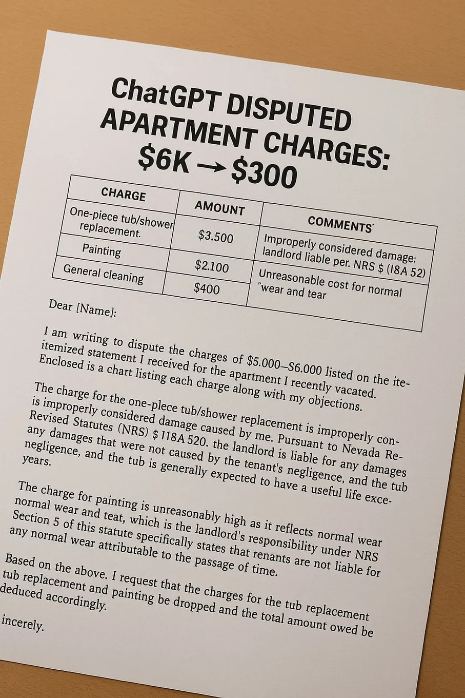

How ChatGPT cut a $6,000 landlord claim to $300
Originally posted on LinkedIn, October 15, 2025.
A woman's landlords demanded $6,000 for damages. She responded with a letter written entirely by ChatGPT, and the amount dropped to $300.
A Reddit user shared that her mother had received an unusually large bill from the building management. It included a “broken” bathtub, paint stains, minor repairs, and other charges adding up to thousands of dollars. Instead of paying immediately, she turned to ChatGPT.
She asked it to organize every item in a table, analyze the charges, and draft a formal legal letter based on Nevada law. The result was a detailed, direct document that challenged nearly every part of the original demand. The bill fell by about 95%.
Contracts are written in professional language, and landlords often operate from a position of power. Tools like ChatGPT change that knowledge imbalance. You do not need a lawyer for every dispute. Sometimes good documentation, persistence, and a language model that can answer the right questions are enough to save thousands of dollars.
The original post shows how ChatGPT can help an ordinary person push back against bureaucratic bullying. That is a welcome change.
